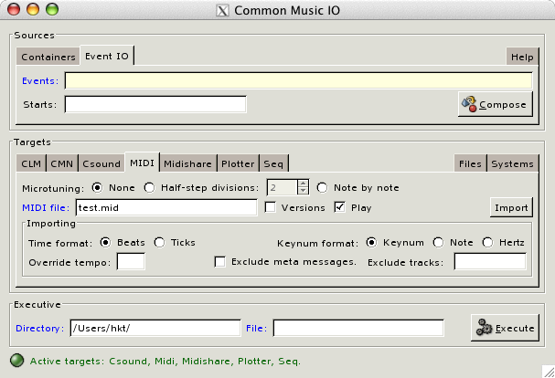

- [Topic]
- CMIO
The CMIO (Common Music Input/Output) window is a graphical tool designed to facilitate the generation of musical event data to and from sound synthesis and display applications. Which applications are active in the window at any given time depend on what software systems have been loaded into Common Music; the window's Systems and Files pages can be used to dynamically configure and load external software such as CLM, CMN and Midishare once the window is open. In addition, the precise characteristics of the various tabbed pages of the interface can be customized by passing appropriate arguments to the cmio function when the window is created.
Window Layout
A CMIO window consists of four GUI components:
- A Sources frame holds tabbed pages that relate to creating and generating event data.
- A Targets frame holds tab pages related to sound sysnthesis and display configurations.
- An Executive frame manages the system's working directory and current input/output file.
- A message line displays color coded information related to the ongoing work inside the window.
Each tabbed page contains a set of fields representing the input/output features of a given application. Left-justified page tabs acess pages devoted to specific tasks and applications; the right-justified pages relate to more general features of the window or the Lisp environment.
Example 1. The four components of a CMIO window: Sources, Targets, Executive and the Message line. Event IO is the currently active source page and Midi is the currently selected target.

- Blue labels mark required fields that must contain infomation before the page can execute.
- Yellow backgrounds indicate fields that will be evaluated when the information is accessed.
- White backgrounds indicate fields that either contain uninterpreted text or are read to produce a Lisp value. It is possible to force evaluation in a white field using the #.expr notation, where expr is evaluated to produce the contents of the field.
- The Message line uses colors to classify the type of message displayed: green represents a normal message, yellow indicates a warning or notification, red signifies an error condition.
Error handling and notification
A CMIO window facilitates musical tasks that would otherwise be
accomplished by evaluating Lisp expressions in the REPL. Under normal
conditions, evaulation errors in the REPL cause execution to stop and
the user is allowed to debug or resolve the error from inside
a break loop. However, a CMIO window executes its windowing
operations via foreign function callbacks that do not expect
their flow of control to ever be interrupted. This means that
generating Lisp error breaks from inside a CMIO window will likely
cause the window to freeze and in sever cases may even cause the Lisp
session to immediately terminate. For this reason a CMIO window
attempts to evaluate Lisp functions in such a way that error messages
are reported in its Message line without ever entering Lisp's error
break loop. If you need to enter the Lisp break loop to debug a
problem then set *cm-break-on-errors* to true, but
realize that once the break is entered the CMIO window and possibly the whole GTK session may no longer work.